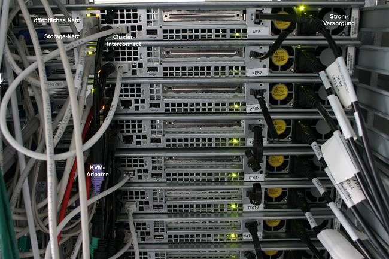
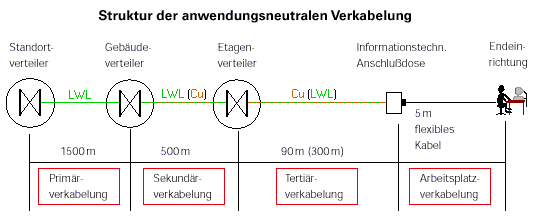
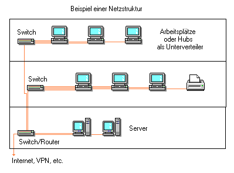
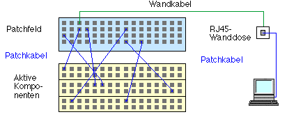
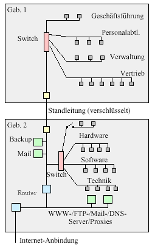
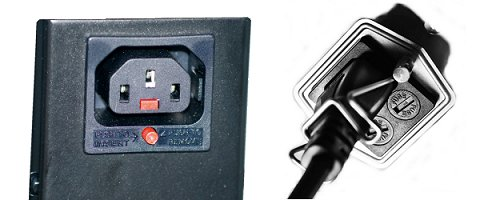
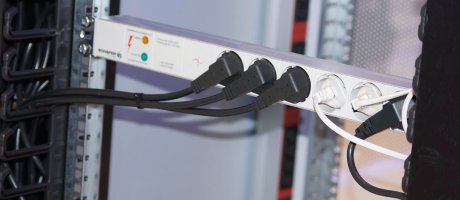
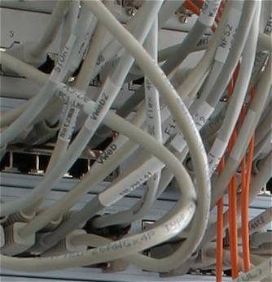
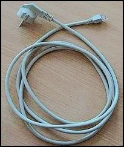

|
Grundlagen Computernetze
Prof. Jürgen Plate |
Netzverkabelung und Netzplanung
Grundlegendes

Derzeit rüsten viele Unternehmen ihr Ethernet um. Der erste und meist teuerste
Schritt auf diesem Weg ist die Neuverkabelung mit Twisted-Pair-Leitungen.
Danach können weitere Maßnahmen ergriffen werden. Die klassische
Maßnahme, das 'Bridging', wurde in Koax-Netzen häufig eingesetzt
und lebt heute in den 'Switches'
weiter. Das Aufteilen eines Netzes in mehrere Teilnetze, auch 'Collision
Domains' genannt, läßt nicht mehr jedes Datenpaket zu jeder Station
gelangen; es können so viele Transaktionen gleichzeitig stattfinden,
wie Collision Domains im Netz vorhanden sind - im Extremfall (Switch) ist
jeder Hub-Anschluß einer eigenen Collision Domain zugeordnet. An die
Switch-Anschlüsse können in der Regel wieder gewöhnliche
Repeating Hubs angeschlossen werden; Switching kann so nach und nach im
Netz eingeführt werden, um die Collision Domains immer weiter zu verkleinern
- bis im Idealfall jedem Rechner ein privates Segment zur Verfügung
steht.
Switches sind heute preiswerter als Hubs, daher spricht alles für eine
Strukturierung des Netzes mit Switches. In einem Peer-to-Peer-Netz (z. B. Unix
oder auch Windows) ohne zentrale Server genügt meistens ein reiner
100BaseT-Switch. Gibt es einige, wenige Server, so kann der Server über
mehrere Ethernet-Segmente parallel mit dem Switch verbunden werden, so daß
der Datenverkehr zwischen Server und Netz gebündelt wird. Besser noch
ist die Serveranbindung mit Gigabit-Switches (Kupfer oder LWL), die gleichzeitig
auch 100-Mbit-Anschlüsse besitzen, um alle Anwender im Netz deutlich
schneller mit Daten zu versorgen - ohne daß deren LAN-Adapter auch
nur berührt werden müßten. Die Server und zentralen Switches
werden am besten in einem 19"-Schrank untergebracht, der zusätzlich
noch Belüftung und eine USV (unterbrechungsfrei Stromversorgung) aufnehmen
kann. Die Schränke besitzen Einschübe für die Server und sind so
gestaltet, daß man von vorne und hinten guten Zugang zu den Rechnern hat.
Das Bild rechts zeigt den Blick von hinten auf die Server im Schrank. Die
Verschliessbarkeit des Schranks sorgt auch für einen Schutz der Server vor
unberechtigtem Zugriff.
Da Twisted-Pair-Kabel heutzutage den Standard darstellen, sollte man auf jeden
Fall bei der Neuverkabelung gleich Cat-6-Kabel oder bessere verwenden, um für die
Datenrate von 100 MHz gerüstet zu sein. Leider ist der verwendete RJ45-Stecker
relativ filigran. Neben der Zerbrechlichkeit der Stecker kommt es bei
Hochgeschwindigkeitsnetzen zu Problemen: Die Drähte und Kontakte werden über
eine kleine Strecke parallel geführt, wodurch die Wirkung der Twisted-Pair-Kabel
aufgehoben wird. Ein weiterer Kritikpunkt an der RJ45-Technik ist die Einheitlichkeit
der Dosen. Der Anwender am Arbeitsplatz kann nicht erkennen, welchem Dienst
die Dose zugeordnet ist (Netz, analogens Telefon, ISDN, etc.). Selbst Farbkennzeichnung
oder Beschriftung hindert viele Leute nicht daran, 'es mal an der anderen
Dose zu versuchen'. Und da kann die Rufspannung analoger Telefone schon
einmal einen Netzwerkadapter 'killen'.
10 MBit/s (IEEE 802.3) und 100 MBit/s (IEEE 802.3u) verwenden eine Halbduplex-Übertragung
über zwei Aderpaare. Bei einer Migration von 10 auf 100 MBit/s bleibt zumindest die
Infrastruktur des Kabelnetzes bestehen. Demgegenüber setzt Gigabit-Ethernet
(IEEE 802.3ab) auf eine Vollduplex-Übertragung über alle vier Paare.
Zwar ermöglicht diese Technik die Verwendung der eigentlich nur bis 100 MHz
spezifizierten CAT-5-Kabel, dazu müssen die Komponenten allerdings anders beschaltet
werden.
Strukturen der Gebäudeverkabelung
Früher war eine "Bedarfsverkabelung" üblich. Die Netztechnik bestimmte
die Art der Verkabelung (Ethernet: busförmige Koaxverkabelung, FDDI:
ringförmig mit Lichtwellenleitern). Die Standorte der Rechner und
Terminals bestimmte die Netzausdehnung.
Die Standards für die Übertragungstechnik nach IEEE 802.3 beschreiben, wie die
Daten nach dem Ethernet-Standard zu übertragen sind, die sogenannten
Verkabelungsstandards beschreiben dagegen die dazugehörige Infrastruktur.
Sie beschreibt deren Aussehen sowie die Übertragungseigenschaften, abgeleitet aus
den Übertragungsanforderungen der IEEE 802.3. Diese Strukturierte Verkabelung,
auch als "Universelle Gebäudeverkabelung (UGV)" bezeichnet, stellt einen
einheitlichen Aufbauplan für die Verkabelungen der unterschiedlichen Dienste dar
(Sprache, Daten, Video, Steuerungen, etc.).
Die strukturierte Verkabelung ist Teil der technischen Infrastruktur einer
Liegenschaft und wird in Primär-, Sekundär- und Tertiärbereiche eingeteilt.
Das bedeutet, dass sich die Netztechnik an eine genormte Verkabelung anzupassen hat.
Jeder Arbeitsplatz bekommt automatisch eine Datennetzdose. Das bringt anfangs
zwar höhere Investitionskosten, ist aber zukunftssicher. Fehler wirken
sich nur lokal aus, denn jeder Anschluß hat sein eigenes Kabel.
Basis der heutigen Gebäudeverkabelung von Netzen sind die in den letzten
Jahren erarbeiteten Normen auf diesem Gebiet. Dabei gibt es im wesentlichen
drei grundlegende Normen, die für bestimmte geographische Regionen von
Bedeutung sind:
- CENELEC EN 50173 (1995): "Informationstechnik: Anwendungsneutrale Verkabelungssysteme",
die in Deutschland auch als DIN EN 50173-1 und folgende in deutscher Sprache
veröffentlicht wurde.
- ISO/IEC 11801 (1995): Generic cabling for customer premises
- EIA/TIA 568 A/B (1994): Commercial building telecommunications cabling standard
Die EN 50173 und die ISO/IEC 11801 haben im wesentlichen den
gleichen Inhalt und enthalten auch die gleichen Anforderungen an die Kabel
und Komponenten. Die EN 50173 ist eine europäische Norm, während die ISO/IEC
11801 weltweit verwendet wird. Die EIA/TIA-568 A/B wurde speziell für den
nordamerikanischen Markt von der dortigen Telekommunikationsindustrie
entwickelt. Sie ist eigentliche keine Norm, sondern lediglich eine
Industrie-Spezifikation. Sie enthält auch geringere Anforderungen
bezüglich der übertragungseigenschaften der Kabel als die anderen
Bestimmungen. In der EN 50173 wird ebenso wie in der ISO/IEC 11801
die Gebäudeverkabelung in vier Bereiche eingeteilt.
- Der Primär- oder Campusbereich verbindet die Gebäude eines Standortes
untereinander und wird auch als "Campusverkabelung" oder "Geländeverkabelung"
bezeichnet. Er umfasst sowohl die Verbindungen des Standortverteilers mit den
Gebäudeverteilern als auch empfohlene Querverbindungen zwischen den
Gebäudeverteilern der verschiedenen Gebäude aus Redundanzgründen. Die verwendeten
Medien für datentechnische Anwendungen sind heute typischerweise Glasfaserkabel
(Single- oder Multimode) und für die analoge oder digitale Telefonie immer
noch Kupferkabel – außer man verwendet "Voice over IP" (VoIP). Sollten
Kabellängen von größer 2000 m notwendig sein oder
extrem hohe Datenraten anfallen, können ebenso Kabel mit Singlemodefasern
verwendet werden. Die Faseranzahl sollte in jedem Fall so bemessen
sein, daß zukünftiges Wachstum der Netzanforderungen erfüllt werden
kann. Als Faustregel sollte man 50% Reserve zum derzeitigen Bedarf
addieren. Werden also derzeit acht Fasern benötigt, sollte ein Kabel
mit zwölf Fasern verwendet werden.
- Der Sekundärbereich sorgt für die vertikale Stockwerksverkabelung,
er wird auch als "Steigleitungsverkabelung" bezeichnet und umfasst die Verbindung
des Gebäudeverteilers mit den Etagenverteilern, als auch empfohlene Querverbindungen
zwischen den Etagenverteilern der verschiedenen Etagen aus Redundanzgründen.
Die verwendeten Medien für datentechnische Anwendungen sind heute typischerweise
Glasfaserkabel (Single- oder Multimode). Wenn im Steigleitungsbereich die Distanzen
zwischen dem Gebäude- und den Etagenverteiler oder zwischen den Etagenverteilern
kleiner als 100 m sind und Datenübertragungsraten nur bis 10 Gbit/s gefordert
werden, lassen sich heute auch noch Kupferverkabelungen verwenden.
- den Tertiär- oder Horizontalbereich dient der horizontalen Stockwerksverkabelung,
er wird auch als "Etagenverkabelung" bezeichnet, und er umfasst die Verkabelung
von den Etagenverteilern zu den Arbeitsplätzen. Die verwendeten Medien sind
typischerweise Kupferkabel und Glasfaserkabel (ausschließlich Multimode). Die
Länge der Segmente im Tertiärbereich sollte 100 m nicht überschreiten, wobei
die Gesamtlänge der Verkabelung der drei Bereiche (Primär, Sekundär, Tertiär)
in Bürogebäuden 2000 m nicht überschreiten sollte.

Horizontalverkabelung und Arbeitsplatzbereich
Im Horizontalbereich und für die Arbeitsplatzverkabelung werden
zumeist hochwertige, geschirmte symmetrische Kupferkabel und -komponenten
eingesetzt, da hier der Anschluß an viele einzelne Schnittstellen
vorgenommen wird.
Wird auch im Horizontal- und Arbeitsplatzbereich mit Lichtwellenleitern
(LWL) verkabelt, stehen damit höhere Bandbreiten zur Verfügung und
es lassen sich längere Strecken realisieren. LWL-Verkabelung kann auch
dann sinnvoll sein, wenn man einfach die EMV-Immunität und die
übertragungssicherheit ausnutzen will. Die Einführung von "Fiber-to-the-desk",
der LWL-Verkabelung bis zum Arbeitsplatz, ist wohl bald Realität. Es ist auch
möglich, beispielsweise den Steig- und den Horizontalbereich durchgehend
mit LWL zu verkabeln, um damit Etagenverteiler einzusparen. Man spricht
dann von einer zentralisierten Verkabelung.
Netzstrukturen
Die heutige Verkabelung wird im allgemeinen hierarchisch in einem
physikalischen Stern aufgebaut. Der Standortverteiler (auch: Hauptverteiler)
als zentrale Schaltstelle ist mit den Gebäudeverteilern in den einzelnen
Gebäuden sternförmig verkabelt. In den Gebäuden werden die Etagen-
verteiler ebenfalls sternförmig mit dem Gebäudeverteiler verkabelt. In der
Horizontalebene schließlich findet eine ebenfalls sternförmige Verkabelung
der Anschlußeinheiten wie der Wanddose mit dem Etagenverteiler statt.
Als Verteiler zum Abschluß der Kabel werden Schränke und Gestelle in
19"-Technik eingesetzt. 19"-Einschübe übernehmen in diesen Schränken
die Kabelbefestigung, die Speicherung einer Reservelänge, die Unterbringung
von Spleißkassetten (falls verwendet) und das Montieren der Stecker
und Kupplungen bzw. Buchsen auf den Verteilerfeldern. Werden nur kleinere
Faserzahlen benötigt, so können statt der 19"-Schränke die kompakteren
Wandverteiler eingesetzt werden.

Im Tertiärbereich werden zum Kabelabschluß Wand- und Bodentankdosen
verwendet. Diese Anschlußeinheiten übernehmen hier die
Kabelbefestigung, die Speicherung der Reservelänge und das Montieren
der Buchsen bzw. Stecker und Kupplungen. Sie bilden den Abschluß der
diensteunabhängigen Verkabelung. Das Endgerät (der PC, die Workstation,
der Drucker, das Telefon, etc.) wird mit konfektionierten Kabeln an
die Wanddose oder den Bodentank angeschlossen. Die Verteilung der Switch-
oder Routerports auf die Endgerätedosen erfolgt über ein Patchfeld.
Es handelt sich dabei um ein Feld mit Netzwerk-Steckdosen (z. B. RJ-45-Dosen),
an welche die Kabel zu den Anschlußdosen in den einzelnen Rämen
angeschlossen sind. Die Verbindung zu den aktiven Komponenten erfolgt dann
über kurze Patchkabel.

Die logische Netzstruktur der Verkabelung hängt davon ab, wie die
einzelnen Netzwerkknoten miteinander kommunizieren. Darunter sind die
Protokolle, Zugriffsverfahren und Konventionen auf der elektronischen
Ebene zu verstehen. Die heute am weitest verbreiteten Standards für
solche logischen Netzstrukturen sind:
- ISDN nach DIN EN 50098 für bis zu 2 Mbit/s in einer sternförmigen
Verkabelung
- Ethernet nach IEEE 802.3 für 10 und 100 MHz übertragungsbandbreite
als logischer Bus
- Token Ring nach IEEE 802.5 für 4 und 16 Mbit/s als logischer Ring
- FDDI bzw. TPDDI (PMD) nach ANSI X3T12 für bis zu 100 Mb/s als logischer
(Doppel-)Ring
- ATM definiert im ATM-Forum für bis zu 622 Mbit/s
Für die Umsetzung von der logischen in die physikalische Netzstruktur
haben sich Netzwerkkonzentratoren etabliert. Hier werden alle wichtigen
Netzwerkaktivitäten zusammengefaßt, was auch die Verkabelung und die
Fehlersuche wesentlich erleichtert. Dadurch ist es möglich, beispielsweise
das Ethernet 10/100BaseT-Verfahren als logisches Bussystem
in einer sternförmigen Verkabelung zu realisieren.
Netzplanung
Aufgaben der Netzplanung
Festlegen der Netzstruktur, die den gewünschten Funktionen
des EDV-Systems gerecht wird.
- Umsetzen organisatorischer und topologischer Strukturen in die Netzstruktur
- Berücksichtigung von Datenschutz, Betriebs- und Einbruchssicherheit
- Koordination mit Provider, Registrierungs- und Ressourcenvergabestellen
- Netzwerkkomponenten, die zu berücksichtigen sind:
- Hubs, Bridges, Router, Gateways
- Paketfilter, Application Gateways
- Accounting- und Diagnosetools
- Anforderungen an eine Netzwerkverkabelung
- offen für verschiedene LAN-Techniken (heutige und zukünftige)
- herstellerunabhängig
- genügend übertragungskapazität auch für die Zukunft
- zuverlässig, unempfindlich gegen Störeinflüsse
- wartungsarm
- wirtschaftlich gerechtfertigte Lösung
- Integration bestehender Installationen
- vorhandene Komponenten sollen einbindbar sein
Ein grosses oder mehrere kleine Netze?
Vorteile eines (grossen) zusammenhängenden Netzes:
- einheitliche Administration einfacher
- bei geringer Netzlast höchste Kommunikationsgeschwindigkeit zwischen allen Rechnern
- Manche Protokolle funktionieren nur auf einem (logischen) Netzwerkstrang, z. B.
- bootp: Booten von Rechnern über ein Netzwerk
- X-query: dynamisches Verbinden eines X-Terminals mit einer Workstation
- Anschluß von Diskless Clients
Nachteile eines zusammenhängenden Netzes:
- Bei Ethernet kommt jedes Paket an jedem Rechner vorbei. Die Netzlast addiert
sich also und Datenpakete können an allen Stellen des Netzes gelesen werden.
- Eine einzelne fehlerhafte Komponente stört das ganze Netz.
Vorteile kleinerer Teilnetze:
- Administrationsverantwortung leicht delegierbar
- Bessere Lastverteilung
- überwindung grösserer Entfernungen möglich
Nachteile kleiner Teilnetze:
- Höherer Administrationsaufwand:
Vergabe von Netznummern, Aufsetzen von Bridges/Routern und Routingtabellen
- Bei ungeschickter Vernetzung bilden Bridges/Router einen Flaschenhals.
Man sollte Netze nicht aufteilen, solange sie überschaubar sind und keine
Lastprobleme haben. Die Netze müssen aufgeteilt werden, wenn Last, Sicherheit
oder Topologie es erfordern. Beim Aufteilen ist auf möglichst kurze
Kommunikationswege zu achten. Die maximale Kabellänge und die Begrenzung
der hintereinander schaltbarer Komponenten spielt eine Rolle (max. 4 Hubs
hintereinander, max. 7 Bridges/Switches hintereinander).
Auswahl der Verbindungskomponenten
Kabelarten:
* Primärbereich: Glasfaserverbindungen
* Sekundärbereich: Glasfaser- oder Twisted Pair-Verbindungen
* Tertiärbereich: Twisted Pair-Verbindungen
Repeater:
+ einfache Verbindung zweier Kabelsegmente gleicher Technologie
- keine Lasttrennung, nur Durchreichen von Paketen
Bridges:
+ Kopplung von Netzen verschiedener Technologie
- keine Lasttrennung bei Diensten, die auf Broadcasts basieren
Switches:
+ intelligente Kopplung, dadurch Lasttrennung
- keine Lasttrennung bei Diensten, die auf Broadcasts basieren
Router:
+ logische Trennung der Netze, getrennte Administration leichter möglich
+ Gesicherter übergang durch Paketfilterung
- höherer Konfigurationsaufwand
Vergabe von IP-Nummern
Soll das Netz (evtl. später) an das Internet angeschlossen werden
und die IP-Nummern nach aussen sichtbar sein? Dann müssen global
eindeutige IP-Nummern beim Internet-Provider angefordert werden.
Ansonsten verwendet man IP-Nummern für ausschließlich interne Verwendung
(gem. RFC 1918):
10.0.0.0 - 10.255.255.255 (ein Class-A-Netz)
172.16.0.0 - 172.31.255.255 (16 Class-B-Netze)
192.168.0.0 - 192.168.255.255 (256 Class-C-Netze)
Zum Anschluss dieser Netze an das Internet ist ein Router mit NAT und
IP-Maskierung nötig. Die interne Adressenverteilung erfolgt in jedem Fall
bevorzugt per DHCP-Protokoll (siehe unten), da in diesem Fall alle Clients
gleich konfiguriert werden können und nur soviel Adressen gebraucht werden wie
Rechner aktiv sind.
Vergabe von Domainnamen
Beantragt wird normalerweise eine Second-Level-Domain unterhalb von
.de .com. net .org. Die Vergabe erfolgt in der Regel
durch den Provider - sofern die Wunschdomain noch frei ist.
Vergabe von Rechnernamen
Sei netzmafia.de der benutzte Domainname. Dann sind
gängige Aliase:
gate.netzmafia.de
mail.netzmafia.de
news.netzmafia.de
www.netzmafia.de
ftp.netzmafia.de
ns.netzmafia.de
Die Zuordnung der Rechnernamen kann erfolgen als:
- Flacher Namensraum, z. B.:
alpha.netzmafia.de
beta.netzmafia.de
gamma.netzmafia.de
delta.netzmafia.de
...
- Hierarchischer Namensraum, z. B.:
alpha.direktion.netzmafia.de
beta.direktion.netzmafia.de
...
alpha.vertrieb.netzmafia.de
...
alpha.entwicklung.netzmafia.de
...
Die Rechnernamen werden von mindestens zwei Nameservern verwaltet (Ausfallsicherheit).
Beispiel einer Vorgabe zur Netzplanung
Beispiel-Szenario:
- Die Firma Netzmafia, Hard- und Softwareentwicklungen, möchte
Internet-Anschluß. Das Unternehmen sitzt in zwei Gebäuden:
- Gebäude 1: Geschäftsführung, Vertrieb, Verwaltung, Personalbüro
- Gebäude 2: Hardware-Entwicklung, Software-Entwicklung, Technik
- Alle Mitarbeiter sollen per E-Mail erreichbar sein und auf das WWW zugreifen können.
- Die Firma betreibt einen WWW-Server, auf dem die Entwicklungsabteilungen
und der Vertrieb Informationen zur Verfügung stellen.
- Die Entwicklungsabteilungen stellen Patches und Treiber per FTP zur Verfügung.
- Die Hardware-Entwicklungsabteilung experimentiert gelegentlich mit
instabilen Netzwerkkomponenten, während die übrigen Abteilungen
auf ein zuverlässiges Netz angewiesen sind.
- Von sämtlichen Rechnern sollen regelmässig Backups angefertigt werden.
Lösung (e pluribus unum):
- Reservierung des Domainnamens netzmafia.de
- Anforderung eines kleinen Netzes, z. B. eine Class-C-Netzes (254 Knoten)
oder eines Class-C-Subnetzes (126, 62, 30 Knoten)
- Zuordnung der Namen:
gate.netzmafia.de 141.39.253.253
srv1.netzmafia.de 141.39.253.1
srv2.netzmafia.de 141.39.253.2
srv3.netzmafia.de 141.39.253.3
Dazu kommen noch Alias-Einträge:
ns.netzmafia.de gate.netzmafia.de
mail.netzmafia.de srv3.netzmafia.de
www.netzmafia.de srv3.netzmafia.de
ftp.netzmafia.de srv2.netzmafia.de
- Die übrigen Rechner erhalten interne IP-Nummer und können nur
über Proxies auf gate.netzmafia.de auf das Internet zugreifen.

Eingehende Mail gelangt über einen Mail-Proxy an den Mailserver. Von dort
aus erfolgt die Verteilung per IMAP oder POP3. Ausgehende Mail wird direkt
über den Mail-Proxy ins Internet verschickt.
Der primäre Nameserver steht in Gebäude 2, der Secondary NS beim Provider.
In Gebäude 2 ist zur Entlastung der Standleitung jeweils ein DNS- und WWW-Cache
installiert. Das Testnetz der Hardwareabteilung ist abgetrennt, aber bei Bedarf
manuell zuschaltbar.
An diesem Beispiel lassen sich einige Aufgaben des Netzwerk-Managements feststellen:
- Planung der Protokoll-Konfiguration (Bezug der IP-Adresse über DHCP, Festlegung des Gateways und DNS-Servers)
- Bei Windows-basierten Systemen muß noch für jeden Client festgelegt werden, an welchem Fileserver er sich anmeldet und zu welcher Arbeitsgruppe er gehört.
- Der Anschluß von Druckern und anderen Peripheriegeräten wurde im Beispiel nicht berücksichtigt. Auch hier muß festgelegt werden, unter welchem Pfad die Drucker angesprochen werden können.
- ähnlich dem Internet Domain Name System (DNS) sind auch andere hierarchische Namensräume verfügbar, z. B. die Directory Services von Novell (NDS) oder die Directory Services und Domänen von Windows 2000/XP.
- Nach der Grundinstallation ist dann noch die Vergabe von Benutzer- und Zugriffsrechten nötig. Insbesondere die Zugriffsrechte auf bestimmte Geräte sind oft Restriktionen im Dienste des Benutzers. Man denke z. B. an einen freigegeben Drucker, der im Nachbargebäude steht. Die Benutzer würden in der Regel vergeblich am lokalen Drucker nach ihren Ausdrucken suchen und sich beschweren.
- Auf den Servern muß ggf. Backup-Software installiert und getestet werden. Administrative Clients werden mit Software zur Netzwerküberwachung eingerichtet.
Zusammen mit der Planung wird das Netz dokumentiert. Neben Angaben über die Topologie sind auch alle Kabelwege, Standorte von Netzkomponenten (Hub, Switches, Router, usw.), Server und Peripheriegeräten zu dokumentieren. übersichtsgrafiken lassen sich recht schnell mit speziellen Tools wie Visio (Microsoft) oder Acrix (Autodesk) erstellen, für die Grafikbibliotheken mit speziellen Symbolen für die Netzkomponenten erhältlich sind. Unter UNIX gibt es ein Tool namens 'tkinetd', das die Rechner im Netz sucht und automatisch eine Grafik erzeugt. Die Standorte der Komponenten und Dosen trägt man am besten auf der Kopie des Bauplans ein.
Server- und Netzwerkschrank
Auch bei kleinen Netzen sollte ein eigener Serverraum eingeplant werden. Das muss nicht
gleich ein eigener Raum sein, sondern es darf sich auch um eine Ecke in einem
Abstellraum handeln - sofern für genügend Belüftung für die Wärmeabfuhr gesorgt ist.
Schon wegen der Geräuschentwicklung von Servern ist eine Absonderung notwendig
(ich kenne Systeme, deren Lüftergeräusch es bestens mit einem Staubsauger
aufnehmen kann). Hier findet auch eine eventuell installierte unterbrechungsfreie
Stromversorgung (USV) Platz.
Der Serverraum sollte so plaziert sein, daß bei Netzerweiterungen die Verkabelung
unproblematisch bleibt. Vom Serverraum zu den Verteilern (Switches) sollte
aus Gründen der zukunftssicheren Verkabelung redundant ausgelegtes Cat-5-Kabel
(optional Glasfaserkabel) verlegt werden. Das folgende Bild zeigt den Schnappschuß
eines typischen Schaltschrank, der mit Switches bestückt ist. Ein KVM-Switch
(Keyboard, Video, Mouse) erlaubt es, die Server über
einen einzigen Monitor mit Tastatur und Maus zu bedienen. Viele KVM-Switches lassen sich
per Netzwerkkabel expandieren, der Bedienmonitor kann dann sogar im Nebenzimmer stehen.

Spannt man Kabel kreuz und quer durch einen Serverschrank, kann dies nicht nur schnell
unübersichtlich werden, sondern sogar die Klimatisierung der Server und Switche
beeinträchtigen. Denn effiziente Kühlkonzepte setzen eine strikte Trennung von kalten
und warmen Luftströmen voraus. Die Luftströme können senkrecht oder waagrecht durch
das Rack geleitet werden, je nach Art des Belüftungssystems. Transversale Kabelstränge
können jedoch Luftverwirbelungen verursachen und damit zu einer Vermischung von
kalter und warmer Luft führen.
Den Themen Verkabelung und Stromverteilung schenkt man meist weniger Aufmerksamkeit.
Dabei kann auch in diesem Bereich die Auswahl geeigneter Komponenten einen wichtigen
Beitrag zum ausfallsicheren Betrieb der IT-Anlagen leisten. Wie so oft ist auch bei
der Energieversorgung von Serverracks das Gesamtsystem nur so sicher wie das schwächste
Glied. Der Administrator vor Ort sollten daher auch vermeintlich unscheinbaren Dingen
wie Steckdosen und Kabeln seine Aufmerksamkeit schenken.
Achten Sie auch auf die Wahl der geeigneten Steckdosenleiste. Obwohl der Schukostecker
auch in professionellen IT-Umgebungen sehr beliebt ist, kann es unter Sicherheitsaspekten
sinnvoll sein, sich für eine andere Steckverbindung zu entscheiden, beispielsweise C13
(sog. Eurostecker). Schukostecker sind nämlich nicht phasenverdrehsicher. Falsch
gesteckte Verbindungen können sich speziell in einem großen Rechenzentrum mit vielen
hundert Steckern schnell zu einem echten Problem ausweiten. Ein Rasterschutz wie im Bild
kann dabei zusätzliche Sicherheit gegen die Unterbrechung durch lockere Kabel bieten.

Ein Rasterschutz oder ein Bügel stellt sicher,
dass sich ein Stromkabel nicht lockert.
Auch die richtige Dimensionierung der Steckerleisten ist von Bedeutung. Auch wenn
ein neu aufgestelltes Serverrack nicht von Anfang an voll mit Servern besetzt ist:
Den Platz für die Steckdosenleisten, die im Endausbau benötigt werden, sollte man
von vornherein mit einplanen. Nur so ist gewährleistet, dass die Sicherungen
ausreichend ausgelegt werden. Es versteht sich von selbst, das Qualitäts-Steckdosen
für den 19-Zoll-Einbau verwendet werden. Mehrfachsteckdosen aus dem Baumarkt
haben im Netzwerkschrank nichts verloren.
Aber auch der Platzbedarf für die Steckdosenleisten spielt eine Rolle. Ein Rack,
das man im Lauf der Zeit unkontrolliert überall dort mit Steckdosenleisten und
Kabeln zubaut, "wo halt noch Platz ist", wird zunehmend luftundurchlässig. Einer
effizienten Kühlung der Server ist das nicht zuträglich.

Kann der Administrator das Rack nicht ständig direkt im Auge haben kann, empfiehlt
sich ein professionelles Rack-Management-System (RMS). Solche Systeme messen vor
Ort etliche physikalische Größen wie Temperatur, Strombelastung oder Portbelastung
und übertragen sie an einen zentralen Rechner, mit dessen Hilfe sie von einem
einzigen Arbeitsplatz aus überwacht werden können. Auch eine SMS-Benachrichtigung
an den Administrator bei Erreichen kritischer Schwellenwerte ist möglich.
Die Kommunikation zwischen Rack-Management-System und Administrator muss aber keine
Einbahnstraße bleiben. Mit entsprechenden Steckdose, die per Ethernet ansprechbar
sind, können Systeme manuell oder scriptgesteuert an- oder abgeschaltet werden.
Bei der Planung der Rackbestückung sollten die Aspekte Strom- und Datenverkabelung
stets im Zusammenhang gesehen werden. So haben Kupfer- und Glasfaserkabel
unterschiedliche Biegeradien. Es muss also auch innerhalb des Racks stets genügend
Platz bleiben, um ein Abknicken von Kabeln zu vermeiden. Bei Patchfeldern sollte
genügend Platz für das Hantieren mit den Steckern und für die Restkabellängen der
Patchkabel vorgesehen werden. Zu enge Portbelegungen erschweren das Rangieren.
Netz-Dokumentation
Bei vielen Administratoren gehört die Dokumentation des Netzwerkes
zu den "unangenehmen" und vernachlässigten Aufgaben. Das
Verkabelungspläne und Konfigurations-Beschreibungen sehr wichtig
sind fällt den meisten erst dann auf, wenn die bestehende Leitungsführung
verändert werden soll oder ein Fehler auftritt. Ohne ausreichende
Dokumentation wird die Erweiterung und Fehlersuche zu einer sehr
kostenintensiven und langwierigen Angelegenheit. Aber die Bedeutung einer
kompletten und aktuellen Dokumentation für die schnelle Wiederherstellung des lokalen
Netzes nach einem Unglück kann nicht hoch genug bewertet werden.Sie ermöglicht
zudem den täglichen Überblick und bietet Hilfen bei der Fehlersuche.
Zusammen mit der Planung wird das Netz dokumentiert. Neben Angaben über die
Topologie sind auch alle Kabelwege, Standorte von Netzkomponenten (Hub, Switches, Router,
usw.), Server und Peripheriegeräten zu dokumentieren.
Die Praxis zeigt leider, daß die Dokumentation bei einer Neuistallation grade noch eben so
klappt, nachträgliche Änderungen werden aber meist nicht mehr dokumentiert.
Für kleine Netze genügt ein Gebäude- oder Raumplan, in den mit
Bleistift und Lineal die Datenleitungen eingezeichnet werden.
Dokumentiert werden Kabelführungen, Lage der Anschlußdosen, Standort
der Stationen und Komponenten (Hubs, Switches, usw.).
Für jedes eingezeichnete Element sollte eine sinnvolle Kurzbezeichnung
vergeben werden, die die eindeutige Zuordnung erlaubt.
Die Art der Bezeichnung sollte Raum für spätere Erweiterungen bieten.
Soll ein bestehendes Netz in naher Zukunft in größerem Umfang erweitert
werden, dann sollte der Lageplan mit Hilfe eines einfachen Zeichen-Programmes
erstellt werden. Diese Lösung benötigt zunächst mehr Zeit als das
einfache Einzeichnen in den Gebäudeplan, ist aber durch die vielfältigen
Editiermöglichkeiten flexibler. Übersichtsgrafiken lassen
sich recht schnell mit speziellen Tools wie Visio (Microsoft) oder Acrix (Autodesk)
erstellen, für die Grafikbibliotheken mit speziellen Symbolen für die
Netzkomponenten erhältlich sind. Unter UNIX gibt es ein Tool namen 'tkinetd', das
die Rechner im Netz sucht und automatisch eine Grafik erzeugt.
Die Kurzbezeichnungen der Elemente in den oben genannten Netzwerkplänen
sind natürlich nur sinnvoll, wenn sie sich auf den entsprechenden Geräten
und Anschlußpunkten wiederfinden. Dies wird über selbstklebene Etiketten
erreicht. Alle Dosen, Hubs, Switches, Router und andere Geräte erhalten
einen solchen Aufkleber. An den Stationen sollte das Etikett neben der
Kurzbezeichnung auch den Netzwerk-Namen des Rechners, die Ethernet-(MAC-Adresse)
und gegebenenfalls die IP-Adresse aufführen. Für Kabel
benötigt man mindestens zwei Beschriftungs-Fahnen: Eine am Anfang
und eine am Ende der Leitung.
- Die Standorte der Komponenten und Dosen trägt man am besten auf der Kopie des
Bauplans ein. Zeichnen Sie auch den Kabelzug ein.
- Erstellen sie eine schematische Zeichnung über alle Kabelsegmente,
und zeichnen Sie alle Verbindungspunkte, Verbindungsausrüstungen und
angeschlossenen Einheiten ein.
- Entwickeln Sie mit Hilfe dieser Zeichnung ein logisches System für die
Benennung (Ziffern, Buchstaben) der Kabelsegmente und Ausrüstungen. Denken Sie
daran, daß das Netz in Zukunft expandieren kann. Tragen Sie die Namen in die
Zeichnungen ein.
- Erstellen Sie eine Liste über alle Kabelsegmente. Notieren Sie für
jedes Segment dessen Name, Länge und Kabeltyp.
- Managebare Komponenten des Netzes (Switches, Router) werden oft wie Stecker und Kabel
angesehen und vor dem Austausch einer Komponente nicht daran gedacht, die Konfiguration
zu speichern oder zu dokumentieren.
- Bei Patch-Feldern kann abgelesen werden, welche logischen
Zuordnungen durch Umstecken der Patch-Kabel möglich sind.
Es ist daher sinnvoll, eine Kopie des Planes in der Nähe jeder "Patch-Einheit"
aufzubewahren.

Es versteht sich von selbst, daß jedes Kabel eindeutig identifizierbar sein
muß. Es gibt im Handel genügend Systeme zur Kabelidentifizierung, z. B.
kleine Plastikringe mit eingeprägten Nummern, die sich um das Kabel legen und
verschließen lassen oder Kabelbinder mit Beschriftungsfahne. Damit ist eine
Numerierung mit beliebig vielen Stellen möglich. Man kann aber auch
Schlüsselanhänger aus Plastik nehmen, das Schildchen beschriften und den
Anhänger mittels eines Kabelbinders am Kabel befestigen. Notfalls kann das Kabel
auch mit einem wasserfesten Filzstift markiert werden. Die Kabelsegmente müssen
an mindestens zwei Punkten (nämlich an jedem Ende) gekennzeichnet werden. Das
Bild links zeigt einen Ausschnitt, bei dem man die weißen Markierungen
gut erkennen kann.
Genauso wie die Kabel müssen
auch alle Ports von Patchfeldern beschriftet werden. Wenn sich Portzuordnungen häufig
ändern, kann man die Ports auch durchnumerieren und in einer Liste die Zuordnung
handschriftlich festhalten. Die Liste kommt in eine Prospekthülle, die im oder am
Netzwerkschrank befestigt wird. Wenn man dann noch einen Stift an einer Schnur
hängt, gibt es auch keine Ausreden mehr für fehlende Einträge.
Zusätzlich zu Plänen und Beschriftungen sind, je nach Netzgröße,
Aufstellungen in tabellarischer Form nützlich:
- Kabel-Tabelle: Hier wird jedes verlegte Kabel mit seiner Kurzbezeichnung
und der aktuellen (gemessenen!) Länge aufgeführt. Es hat sich in der Praxis
bewährt, die Längen bei Bus-Netzen von Zeit zu Zeit nachzumessen. So
werden Leitungen entdeckt, deren Verlängerung nicht dokumentiert wurde,
zum Beispiel weil sie nicht durch den Administrator, sondern durch die
Anwender ausgeführt wurde.
- Patch-Tabelle: Diese Tabelle wird neben dem Patch-Feld ausgelegt
und dokumentiert die aktuelle Zuordnung der einzelnen Leitungen.
- Stations-Konfiguration: In dieser Aufstellung wird die aktuelle
Netzwerk-Konfiguration jeder Station festgehalten. Je nach Anzahl
der Rechner im Netz kann sie entweder per Hand (zum Beispiel auf
Kartei-Karten) oder mit einem Datenbank-Programm erzeugt werden.
Die Dokumentation des lokalen Netzes legt am besten in Form eines Betriebshandbuches an.
Das Betriebshandbuch muß in mehreren Exemplaren vorhanden und dem Systemverwalter,
Superusern und dem Benutzerservice sowie deren nächsten Vorgesetzten zugänglich
sein. Das Betriebshandbuch sollte enthalten:
- Die LAN-Policy
Ein kurzer Abriß der LAN-Politik des Unternehmens kann Informationen über
Benutzergruppen, Paßwortpolitik und Möglichkeiten des externen Zugangs
(remote login) enthalten. Das Kapitel kann außerdem Regelungen für die
Ausleihe von PC-Ausrüstung nach Hause und Maßnahmen gegen PC-Viren, Hacker
und das Kopieren von Software festlegen.
- Schlüsselpersonen
Der Systemverwalter ist die absolute Schlüsselperson des lokalen Netzes. Außer
diesem sind etwaige Benutzerservice-Mitarbeiter und Superuser wichtige Personen.
- Arbeitsgänge für Benutzerservice und -support
Dieser Abschnitt beschreibt die Vorgehensweise beim Auftreten von Fehlern, die Aufgaben
des Benutzerservices und Richtlinien für den Einkauf von Hardware und Software.
- Verwaltung von Hardware und Software
Ein Hauptziel des Betriebshandbuches ist es, sicherzustellen, daß alle
Standardkonfigurationsparameter dokumentiert sind, damit es möglich ist, Fehler
und Unzweckmäßigkeiten zu berichtigen. Dieses Register ist auch für
die Steuerung des Unternehmensbestandes an PCs und Zubehör sowie den Bestand an
in Form von Originaldisketten oder -CDs von Bedeutung.
- Tägliche und wöchentliche Routinen des lokalen Netzes
Das Betriebshandbuch kann Schulungs- und Anleitungsressourcen einsparen, indem es der
Ort ist, wo alle administrativen Aufgaben beschrieben sind. Die wichtigsten
Tätigkeiten sind das routinemäßige Backup und Restore, die Angaben der
Verantwortlichen, Regeln für das Einrichten neuer Benutzer und die Erweiterung von
Berechtigungen Sowie andere regelmäßige Tätigkeiten.
- Beschreibung der physischen Struktur des lokalen Netzes
Die Dokumentation der Konfiguration von Servern und anderer zentraler Ausrüstung
ist obligatorisch. Es ist besonders wichtig, daß Platten- und Volumenstrukturen
des Fileservers sorgfältig dokumentiert werden, da diese Informationen entscheidend
für ein problemloses Restore von Backups nach einem Systemausfall sind. Außer
Fileservern umfaßt die zentrale Ausrüstung auch eventuell vorhandene
Kommunikationsserver, E-Mail-Server, Testmaschinen und Netzdrucker.Die Kabelführung
im lokalen Netz einschließlich der LAN-Struktur in Hauptzügen und eine etwaige
Segmentierung muß ebenfalls gründlich dokumentiert sein.
- Beschreibung der logischen Struktur des lokalen Netzes
Die Dokumentation der logischen Struktur des lokalen Netzes umfaßt die
Zusammensetzung der Benutzergruppen, die Platten-, Verzeichnis- und Dateistruktur im Netz.
- Software des lokalen Netzes
Für Programme auf dem Server kann es eine Hilfe sein, genau dokumentiert zu haben,
was konfiguriert werden muß, wenn ein neuer Benutzer Zugang dazu haben soll. In
vielen Fällen müssen außerdem Drucker, die Lage von Dateien und anderes
konfiguriert werden. Es kann Zeit gespart werden, wenn diese Dinge in Form von Checklisten
beschrieben sind. Gleichzeitig erhalten die verschiedenen Benutzer ein einheitliches Setup.
Scheinbar unwichtig ist die Dokumentation von aufgetretenen Fehlern und die Maßnahmen,
die zur Fehlerbehebung getroffen wurden. Gerade diese Informationen sich jedoch oft
äußerst wertvoll. Einerseits kann man später beim Auftreten desselben
Fehlers zu einem späteren Zeitpunkt die zu treffenden Maßnahmen nachlesen.
Zum anderen kann durch Protokollierung der Fehler das sporadische Auftreten des gleichen
Fehlers präventiv gearbeitet werden. Zeigt z. B. ein Fileserver alle paar Wochen
defekte Sektoren, dann geht so etwas als Einzelereignis oft im Tagesgeschäft unter.
Bei regelmäßiger Dokumentation kann gegebenenfalls rechtzeitig die Festplatte
ausgetauscht werden.
Kostenlose Software von Reichle & De-Massari:
R&M Netplanner
Fehlersuche/Belastungstest
Fehlersuche
Wenn man davon ausgeht, dass die reinen Harwaretest (Kabelanschlüsse,
übersprechen, Dämpfung, usw.) erfolgreich verlaufen sind (siehe
Fehlerquellen und Fehlersuche bei der
Verkabelung), kann man u. a. folgende Massnahmen durchführen um
die Funktionsfähigkeit des Netzes zu testen, wobei ich hauptsächlich
Möglichkeiten anführe, die ohne besonderes Testequipment durchführbar
sind. Entsprechende Test-Hardware leistet ähnliches:
- Test aller aktiven Komponenten (Switches, Router, Glasfaser-Modems)
auf Funktion (geht - geht nicht). Sind alle Ports eines Switches
erreichbar usw.
- Überprüfen der Konfiguration managebarer Komponenten (Übertragungsmodus,
VLAN-Zuordnung, Aktivierung der Ports etc.).
- Die Erreichbarkeit aller Endpunkte auf TCP/IP-Ebene lässt sich mit
den Programmen "ping" und "traceroute" (bei Windows "tracert")
testen. Hier lassen sich auch grobe Anhaltspunkte für Transferzeiten
ermitteln.
- Bei managebaren Komponenten lassen sich statistische Daten
(Datendurchsatz, Kollisionen etc.) über die Managementfunktion
(Webinterface, SNMP) abrufen.
Verdächtig ist auf jeden Fall das Auftreten von Kollisionen.
- Das Programm "iptraf" ist ein Linux-Programm, das umfassende Netzwerkstatistiken
liefert, darunter transferierte Paket und Bytes, Interface-Statistik von IP, TCP, UDP,
ICMP. IP checksum errors usw. Dazu gibt es einen Service-Monitor für TCP und UDP,
der eine Port-Statistik liefert. Weitherhin liefert das Programm eine Statistik der
Aktivitäten der verschiedenen Hosts. Filterfunktionen erlauben das Eingrenzen
der Daten. Zu beziehen unter http://iptraf.seul.org/.
- Das Programm "netio" (
http://freshmeat.net/projects/netio/)
gibt es als Windows- und Linux-Version. Es misst den Netto-Durchsatz auf
der Verbindung, also ohne den Overhead, der durch Applikationen wie FTP
oder dem für das Filesharing erzeugt wird. Auch hat die Geschwindigkeit
der Festplatte keinerlei Einfluss auf die übertragungsraten. Daher
liegen die Werte von netio-Messungen immer über den Werten, die in der
Praxis erreicht werden, dafür sind sie miteinander vergleichbar.
Ein ähnliches Programm ist "iperf". Auch das Microsoft Tool "ttcp" kann
verwendet werden (auf der Windows XP CD oder Service Pack CD unter
\VALUEADD\MSFT\NET\TOOLS).
Weitere Test sollten im Probebetrieb des Netzes erfolgen (Server sind
online, zumindest einige Clients sind vorhanden). Dann können
folgende Tools eingesetzt werden.
- NTOP ist ein Tool zur Beobachtung und statistischen Auswertung des
Netzwerkverkehrs. Interessant ist das Einlesen und Auswerten von
gespeicherten Tracefiles mit der Option „-f“. Dann liest NTOP keine
Daten von der Netzwerkkarte, sondern erzeugt lediglich Auswertungen für
den vorhanden Trace. NTOP arbeitet auch mit NetFlow von Cisco zusammen.
Der Zugriff auf NTOP erfolgt über einen Webbroser.
NTOP ist auch in Kombination mit Hardware als nBox erhältlich.
(http://www.ntop.org)
- "Etherape" kann seine Daten sowohl direkt vom Netz als auch aus einem
gespeicherten Trace beziehen. Aus diesen Daten erstellt es eine Reihe
von grafischen Auswertungen zu Kommunikationsbeziehungen und
Protokollverteilung. Etherape befindet sich noch in der Entwicklung und
läuft momentan nur unter Linux mit Gnome-Desktop.
- SmokePing ist spezialisiert auf die Messung der Round-Trip-Time. Es
gibt Probes für eine Reihe von Protokollen (ICMP, TCP, HTTP, etc.). Die
Zeiten werden in einer Datenbank festgehalten und können über ein
Browserinterface visualisiert werden. SmokePing ist wie MRTG ein Tool
zum Baselining eines Netzwerkes. In Problemfällen kann man mit diesen
Tools sehr schnell Veränderungen und deren Auslöser erkennen.
(http://oss.oetiker.ch/smokeping/)
- Für WLAN eignet sich der "network stumbler" (
http://www.netstumbler.com).
Mit diesem Windows-Programm kann die Reichweite und die Abdeckung der
WLANs abgeschätzt werden.
Belastungstest
Schwieriger sind Sicherheitstests bei den Servern und eine Vorhersage
über das Lastverhalten, wenn nicht nur ein paar Clients
aktiv sind, sondern das Netz unter Vollast fährt. Ein Beispiel
aus der Praxis ist die Notenbekanntgabe am Semesterende, wenn kurz nach
Freigabe der Informationen das Netz bzw. die Webserver unter der
Last der Anfragen zusammenbrechen.
Das Belastungstest-Tool "Hammerhead" kann mehrere Verbindungen
gleichzeitig öffnen und dabei auch Anfragen von verschiedenen IP-Aliasen
und bis zu 256 verschiedenen Usern generieren. Nach der voreingestellten
Testzeit liefert das Tool einen aussagekräftigen Report. Neben Anzahl
der Threads, Timeout-Schwellen, Test-Zeit, Usern lassen sich noch viele
weitere Parameter einstellen. Man kann sogar Erwartungswerte für
Ergebnisse eingeben, die dann mit den realen Resultaten verglichen
werden. Hammerhead wartet bei jedem Request auf Antwort vom Server.
Ist der Server schlecht angebunden, kann es vorkommen, daß die
voreingestellte Request-Rate unterschritten wird. Auch kann das Programm
nur so schnell arbeiten, wie der Computer, auf dem es läuft.
(http://hammerhead.sourceforge.net)
Einfacher Hardware-Netzwerktester
Bei größeren Netzen muss man oft prüfen, welche Dose oder welches Kabel
mit einem Switch verbunden ist. Dazu genügt eine Netzwerkkarte für
wenige Euro, die sich für die Wake-on-LAN-Funktion nicht nur aus dem PCI-Bus,
sondern auch über einen dreipoligen Stecker mit Strom versorgen kann.
Wenn an den richtigen Pins 5 Volt anliegen, genügt das der Karte, um eine
Ethernet-Verbindung aufzubauen und dies mit ihren LEDs "Link-Status" und
"10/100 MBit" anzuzeigen. Nur wenn am anderen Ende des Kabels keine aktive
Komponente hängt, bleiben die LEDs dunkel. Man kann an den Wake-on-LAN-Stecker
einfach Batterien anschließen. Vier Akkus zu je 1,2 Volt liefern 4,8 V,
was dem meisten Karten genügt. Oder man nimmt einfach vier Zink-Kohle-Batterien
(4 x 1,5 V = 6 V) und schaltet eine Diode zwischen Karte und Batteriebox,
dann wird die Karte mit ca. 5,4 V versorgt, was den meisten Karten auch nichts
ausmacht. Die ganz edle Variante ist ein 5-V-Low-Drop-Spannungsregler zwischen
6-Volt-Batteriepack und Karte.
 Der so entstandene Ethernetport-Tester zeigt zuverlässig an, ob eine Dose
oder ein Kabel mit einer Ethernet-Gegenstelle verbunden ist und wie schnell
die Verbindung ist. Man darf ihn jedoch nicht mit einem Kabeltester verwechseln,
denn ein Link kann durchaus zustande kommen, wenn nicht alle Adernpaare korrekt
verbunden sind.
Der so entstandene Ethernetport-Tester zeigt zuverlässig an, ob eine Dose
oder ein Kabel mit einer Ethernet-Gegenstelle verbunden ist und wie schnell
die Verbindung ist. Man darf ihn jedoch nicht mit einem Kabeltester verwechseln,
denn ein Link kann durchaus zustande kommen, wenn nicht alle Adernpaare korrekt
verbunden sind.
Das Bild zeigt die Pins des Steckers auf der Netzwerkkarte: An Pin 1 müssen 5 Volt
anliegen, an Pin 2 Masse. Pin 3 bleibt unverbunden, denn hier meldet die Karte,
dass ein Wake-on-LAN-Paket eingegangen ist.

Universal-Netzkabel
Copyright © FH München, FB 04, Prof. Jürgen Plate
Letzte Aktualisierung: 07. Mär 2012
 Zum vorhergehenden Abschnitt
Zum vorhergehenden Abschnitt Zum Inhaltsverzeichnis
Zum Inhaltsverzeichnis Zum nächsten Abschnitt
Zum nächsten Abschnitt